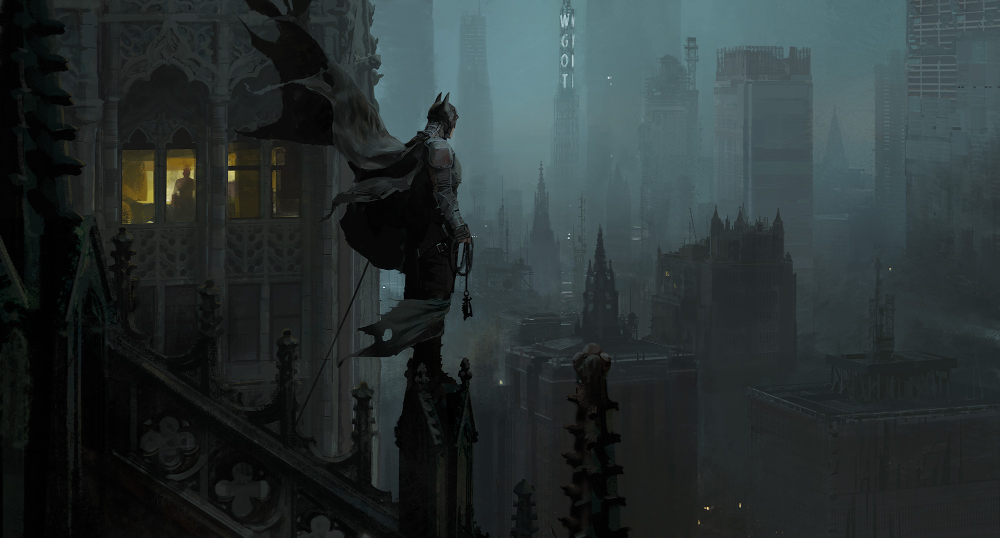
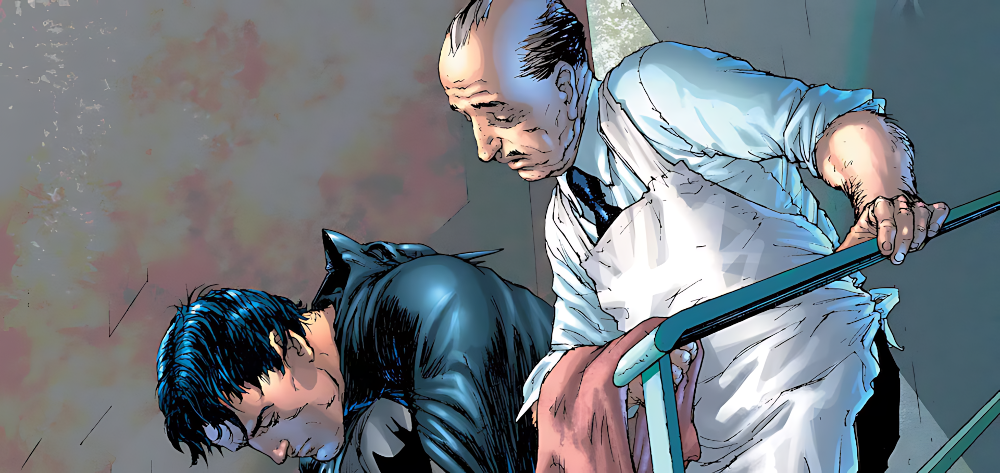
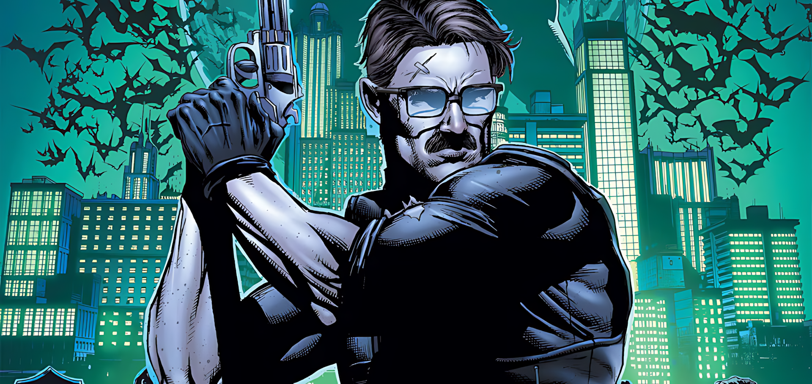
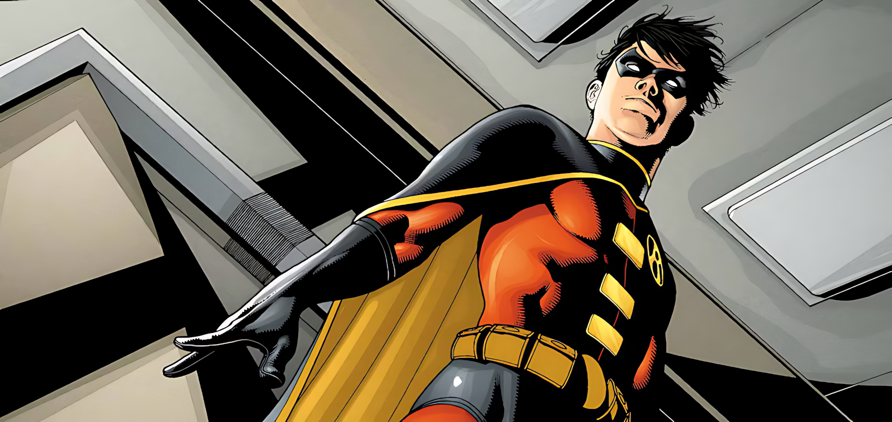

Redefine
Born from tragedy, shaped by purpose — Batman redefines justice through fear, intellect, and resilience. More than a man, he is a symbol. Gotham doesn’t need hope. It needs him.
Watch TrailerLorem
Welcome to the Beginning of the Legend
I am vengeance. I am the night. I am Batman.

From Tragedy to Justice: The Birth of Batman
After witnessing his parents' murder as a child, Bruce Wayne vows to fight crime. He trains his mind and body relentlessly, becoming Batman—a symbol of fear, justice, and resilience in Gotham.





Bruce Wayne / Batman
The Joker
Alfred Pennyworth
James Gordon
Robin
The Origin and Early Years
1939-1940sBruce Wayne's tragic origin, his rigorous training worldwide, and his debut as Batman, fighting early mobsters and iconic foes like Joker and Catwoman, establishing his mythos.
The Silver Age & Bat-Family Expansion
1950s-1960sBatman's adventures often became lighter, focusing on sci-fi threats and expanding the Bat-Family with Robin, Batgirl, and Bat-Mite, solving intricate mysteries with gadgets.
The Dark Age & Modern Revitalization
1970s-1980sA return to darker, grittier detective work. Frank Miller's "Year One" redefined his origin, and stories like "The Killing Joke" explored deep psychological impacts on characters.
Major Crises & City-Wide Events
1990s-2000sGotham faces catastrophic events like "Knightfall" (Bane breaks Batman), "No Man's Land" (Gotham becomes a wasteland), and "Hush," testing Batman's limits and allies.
Rebirth & Evolving Legacy
2010s-PresentModern interpretations delve deeper into Bruce Wayne's psyche, explore his relationships, and introduce new challenges, constantly evolving Batman's enduring legacy in Gotham.
Gotham
Beneath the Shadows, the City Breathes.

Gotham City is a vibrant hub of industry and culture, whose citizens are protected by Batman's constant vigilance.
THE CITY'S HISTORY
A Puritan community founded in the early 1600s, Gotham City soon became linked with rumors of occult practices and witchcraft. This notorious reputation was not helped by its proximity to dens of murder such as Slaughter Swamp. Gotham City's distinctive skyline took shape in the 1800s, when Judge Solomon Wayne led a Gothic Revival movement that gave the city a wealth of flying buttresses and gargoyles. These share space with Wayne Industries' shining edifices of glass and steel. The city houses both the fantastically wealthy and the desperately poor. Tension between the two classes has led to incidents like the fatal mugging that orphaned young Bruce Wayne. Gotham City's business district is a haven for boutiques and art galleries. This prosperity has lured both common crooks and Super-Villains. Arkham Asylum houses the criminally insane; other felons are confined to Blackgate Penitentiary, a maximum-security facility.
All Rights Reserved © amrgum2033@gmail.com